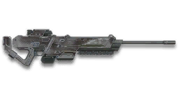

← Back to the SR-ARX Einstein comparison
Sage Guide · Nanite Systems Operatives · Infiltrator
The auraxium SR-100 — 400 damage at every range, no falloff, ever. The flattest rifle in the class, earned by auraxiuming the Sniper Rifles directive.
Read this first — this gun is a directive reward — it cannot be bought. The SR-ARX Einstein is unlocked by completing the Master Sniper Rifles directive (auraxium level). Certs and Daybreak Cash are both unavailable. You earned this gun by finishing the Sniper Rifles directive tree — this guide assumes you already know the basics, so there is no first lesson here.
The one-line verdict: 400 damage at 10 m, 400 at 300 m, 400 everywhere. Two headshots, 300 ms apart, at any distance — the only sniper rifle here whose kill never fades with range. The price is 450 m/s: the slowest bullet here, and the longest drop.

The SR-ARX Einstein · Nanite Systems Operatives · 8-round magazine · directive reward
Every section below folds shut — tap a heading to open it. Section 01 starts open, because it's the damage model that defines this gun.
Every enemy infantry has 1,000 health (500 shield + 500 health). Your bullet does 400 damage up close — SR-ARX Einstein damage. Headshots count ×2.2, leg shots count less (×0.9). Sniper rifles use a separate Sniper Rifles resistance type: body and leg shots are reduced against Nanoweave wearers (about 20% — implied by the wiki's effectiveness tables), so the chest count rises in the far bands. Headshots ignore it.
| Range | Damage | Head | Chest | Legs | Chest vs Nanoweave |
|---|---|---|---|---|---|
| All ranges | 400 | 2 | 3 | 3 | 4 |
Perfect-accuracy times: 2 headshots = 300 ms at any range; 3 chest shots = 600 ms at any range; 1 headshot + 1 chest shot = 2 shots = 300 ms at any range (880 + 400 = 1,280). Against a shielded Heavy Assault (1,450 health): 2 headshots at any range (880 × 2 = 1,760), or 4 chest shots at any range. Against a MAX (wiki): 13 headshots, 25 torso shots. The headshot multiplier is ×2.2 in the Census feed and ×2.0 on the wiki — either way, it is two headshots. In real fights you will land maybe half your rounds — still, this is why the flat damage matters: the kill never fades, so the only thing that changes with range is the drop.
The gold line is flat — 400 damage at every range. The dashed blue line is the SR-100 it is based on, falling from 450 to 334 by 150 m. That is the whole trade: the Einstein gives up 50 damage up close and 66 m/s of velocity, and in return the kill never fades.
One gun, four fighting styles. The right technique changes with distance — use the range finder below to see what your bullets do at any range, then learn the four bands underneath it.
How to fight hereAim down sights at the chest and fire one aimed shot at a time, releasing between them. The damage hasn't faded — only the drop has grown.
Aim: centre of the chest, from the hip. Keep moving.
Scoping in costs you time and slows you down — at arm's length that gets you killed. But be honest with yourself: this gun's hipfire is loose (6.0° standing, 6.5° moving), so keep it truly close, strafe side to side (A/D) while firing, and let your 400-damage bullets do in three hits what a starter needs five for.
Aim: neck / upper chest. Two aimed shots, 300 ms apart.
This is where the gun earns its keep: full 400 damage, a 0.00° starting cone, and a two-headshot kill in 300 ms. Start your crosshair at the neck — the natural straight-up climb walks your second shot into the head. Your home range as an Infiltrator: close enough to reach your squad, far enough that the enemy's hipfire can't touch you.
Aim: chest. One aimed shot at a time, pause between them.
The damage hasn't faded — it never does — but the drop has grown (0.74 m at 200 m is already more than a head). Fire a shot, release for a split second to let accuracy reset, fire again. The recoil climbs straight up (angle −5°/+5°, no sideways bias), so pull your mouse gently straight down — no sideways correction needed. Crouch or stand still when you can — both tighten your shots.
Aim: chest, holding high. One aimed shot at a time at exposed targets.
At 300 m the bullet has dropped 1.67 m — more than a whole soldier — but it still deals 400 damage when it lands. Take these shots at stationary or fleeing targets, medics reviving, and engineers on turrets. Your two-headshot kill is still 300 ms. This is the one sniper rifle that genuinely owns long range, because the range never takes anything away from it.
Your accuracy is decided by two things before skill even enters it: what your body is doing (your stance sets the starting cone of fire) and what your finger is doing (how you work the trigger). The SR-ARX Einstein is a semi-automatic sniper rifle, so "firing modes" are something you do with your finger and the bolt — not a setting on the gun. And with a 6x scope or higher, a third thing matters: scope sway — the crosshair drifts, more the higher you zoom. Hold Breath (Shift by default) almost completely suppresses it; the Target Focus implant extends how long you can hold it.
| Stance | Starting cone | What it means for you |
|---|---|---|
| Sprinting | 7.0° | Maxed out — the widest the cone can be. Never start firing from a sprint. |
| Hipfire, moving | 6.5° | Walking or strafing from the hip. Fine inside ~8 m, leaks rounds past the target beyond it. |
| Hipfire, standing | 6.0° | Your point-blank default. The 0.84 m ring at 8 m in section 04 is this stance drawn out — workable, but every starter hipfires tighter than you do. |
| Hipfire, crouched | 5.5° | The tightest hipfire you have (6.0° if you crouch-walk). Crouch when holding a doorway from the hip. |
| Aimed (ADS), feet planted | 0.00° | Standing or crouched still makes no difference here — a perfect point, not a cone at all, until the first shot's bloom. Crouch-walking while aimed is 0.20°. |
| Aimed (ADS), strafing | 0.25° | That is the moving floor — the cone you start from while strafing aimed, before bloom adds 0.15° per shot. You move at 0.5× speed while aiming, same as every sniper, so strafe between shots to break their aim, not during them. Note the quirk: your aimed maximum is 0.15°, which is below the moving floor — strafing aimed is always worse than standing aimed. |
| Mode | How your finger does it | Use it at |
|---|---|---|
| One aimed shot — the default | Click once, release, let the cone reset, click again | Almost everything, 8–300 m. Each shot starts at 0.00° and the bloom (0.15° per shot) only matters if you fire again before resetting. One clean shot, then the next. |
| Two quick shots | Click twice, as fast as the 300 ms refire allows | When the kill needs a second headshot — which is every kill on this gun. Two shots stay nearly inside the moving cone (0.00° → 0.15° → 0.30°), so the pair is honest. Past two, release and reset. |
| Spam clicking — the mistake | Clicking as fast as your finger allows, shot after shot | Nowhere. Every shot adds 0.15° of bloom and the recoil climbs with it. Eight rounds of spray is an empty magazine and a dead Infiltrator. |
A target 30 m away, aiming down sights. Press and hold FIRE (mouse, touch, or hold Space with the button focused) and the practice window fires at the fastest pace this gun allows — one round per click in the real game, 300 ms apart — and watch the holes walk wider the longer you hold. Release, let the cone reset, fire again. One aimed shot is perfect discipline; two quick shots are tolerable. This practice window is shared by the whole Sage series: it is driven by a weapon profile plugged into the window — here the Einstein's (200 RPM, 0.00° starting cone, 0.15° bloom per shot, target at 30 m) — and the spread is drawn at true scale from those numbers. Note the cone grows from the very first shot: there is no free window where the bullets stay perfectly grouped.
Cone of fire — fills as you hold, empties when you release.
Your shot strings will be graded here — one aimed shot is perfect discipline.
Some things are easier to show than to say. Here's what your bullets actually do: how wide hipfire spreads at 8 metres, what a good shot rhythm looks like, and what the scopes really change. The hands-on version — firing the shots yourself — is the practice window in section 04.
A full-size target 8 m away — an arm's-length room fight. The rings show where hipfire rounds land around your aim point (the chest). Sizes are drawn to scale from the gun's real cone-of-fire numbers.
Read it this way: standing still, the 0.84 m ring sits inside the chest — most rounds hit a target this size, which is why hipfire works point-blank. But move and it grows to 0.91 m — wider than the torso — so the edge rounds start leaking past him, and the rings only grow with distance while the man doesn't. Crouching tightens the ring to about 0.77 m (5.5°). Past ~10 m that's rounds missing entirely: the exact moment to switch to aiming down sights, where the spread shrinks to a dot. (Ring sizes use the real geometry: spread diameter = 2 × distance × tan(cone ÷ 2).)
Every shot widens your cone of fire ("bloom"). Releasing the trigger for a heartbeat resets it. Same 4 shots, two very different outcomes:
The target pattern is one aimed shot, a pause, and one more aimed shot — that is the ideal. Past that, the bloom (0.15° per shot aimed) keeps growing with every shot from the very first one, so the extra bullets mostly decorate the wall behind your enemy instead of hitting him. Short strings also leave you rounds for the second enemy — remember, the magazine is only 8, and a 4-shot spam is a third of it gone.
At 150 m through the 6x scope, the target is big enough to place a headshot — and you still see the ground around him. Fast to aim, nothing blocks your edges. Scope-in is 0.3 s; hold your breath (Shift) for the shot.
Same target, same 150 m — but through the 12x scope he looks nearly twice as tall again, so placing shots on his head gets much easier. The price: your view narrows to the round window, the world outside the glass is gone, and the sway looks twice as big. Best past 100 m.
That's the whole 30-cert decision from section 05 in one picture: 6x for the fight you are in, 12x for the shot you are planning. Most veterans carry both and swap per base — 6x for open ground, 12x for the long lane.
Attachments are small multipliers, not new guns. The only ones that really change how this gun behaves are the ones that affect scope-in time, sway and your aim. Prices are in certs where the wiki lists them; anything unpriced is marked "check in-game" — it hasn't been verified here.
If no optic is chosen, this scope is attached. A clean 6x with a 0.3 s scope-in. Your default once you earn the gun.
Good: almost everything an Einstein does — 20–300 m, where the flat damage lives.
Bad: tight indoor rooms — the zoom makes close targets feel fast and huge.
More magnification for the longest shots. The sway looks bigger with every step up, and the scope-in stays 0.3 s.
Good: the 150–300 m lane, picking off stationary targets.
Bad: any fight inside 100 m, where the 6x already covers you and the extra zoom only narrows your view.
Nothing wrong with an empty barrel slot on this gun — no attachment here changes your damage, and the flat 400 does not need help.
Good: your first weeks with the gun. Spend certs on your Infiltrator tools and suit first.
Bad: nothing — there is no downside to an empty slot.
Hides your muzzle flash without the suppressor's damage and velocity cost — and there is no suppressor for this gun at all. You still appear on the minimap when you fire.
Good: night fights and dark corners, where the flash gives you away before the minimap does.
Bad: daylight open-field work, where the flash was never the problem. And remember: as a directive rifle, firing reveals you from 150 m — the flash suppressor does nothing about that.
A torch whose beam reveals cloaked infiltrators. Toggle it with the attachment key (X by default).
Good: hunting a stalker infiltrator camping your capture point — sweep corners with it.
Bad: as your everyday rail — it gives zero accuracy help, and the beam advertises your position.
Reduces swap time by 30% and horizontal recoil by 20%, but increases vertical recoil by 20%. On this gun the faster swap is the real prize.
Good: getting the rifle out fast after a cloak, and getting your sidearm out when the magazine runs dry.
Bad: if the extra vertical climb bothers you — the recoil is already straight up.
Removes the weapon's ADS moving accuracy penalty, but you move 33% slower while aiming. Your aimed cone stays at 0.00° even while strafing.
Good: holding a lane while strafing — your shots stay pinpoint while you move.
Bad: aggressive play — the slower ADS strafe makes you an easier target if they spot you first.
Four ready-made setups — pick one, buy the attachments, go fight. Nothing here needs more than the gun and the listed attachments.
0 certs attachments · Just earned the gun
What the directive actually gives you. Genuinely usable — learn the gun on this before spending anything more. The Comfort Grip is your first 100 certs.
130 certs attachments · Recommended
The best value in this whole guide. A little more glass, a faster swap — and the flat 400 does the rest. Covers every fight from a doorway to the long lane.
230 certs attachments · Steady aim
Built for holding a lane while strafing: pinpoint aim even while moving, at the cost of a slower ADS strafe. Swap back to the All-Rounder when you need to move fast.
200 certs attachments · Low profile
The quiet night build: no muzzle flash, a torch for stalker duty, and the flat 400 behind it. Remember the 150 m detect range — the flash suppressor hides the flash, not the minimap.
The gun is fine — your habits decide the fights. Six things to do on every engagement, in order.
Headshots deal 2.2× damage: 2 kills at any range versus 3 to the chest. Don't aim at the head directly — aim at the neck and let the gun's natural straight-up climb carry the second shot into the skull. It's the single biggest damage upgrade you own, and it's free. At 300 ms for two heads, no bolt-action out-kills you anywhere — and the damage never fades.
Every shot widens your cone of fire by 0.15° aimed, from the very first shot. Firing again before it resets means the second bullet leaves a 0.15° cone — and the third a 0.30° one, past the moving floor. Click once, release, let it reset. With only 8 rounds, you can't afford to decorate the wall.
Every other sniper rifle teaches you two things: how the damage fades and how the bullet drops. This one teaches you one — the drop. 450 m/s is the slowest bullet here: 0.19 m at 100 m, 0.74 m at 200 m, 1.67 m at 300 m. The kill is the same at every range, so all of your practice goes into holdover. That is the whole advantage, and it is free.
Reloading with even 1 bullet left takes 2.222 s; an empty gun takes 2.8 s. That extra 0.58 s is more than half a second standing defenceless. Count roughly: after two kills or ~6 rounds, duck behind cover and reload early. Treat the last 2 rounds as your emergency reserve, not your working magazine.
Walk with your crosshair at head height, pointed where an enemy's head will appear — a doorway edge, a corner, stairs. Most beginners lose fights in the half-second spent dragging the crosshair onto target. And you move at 0.5× while aiming, same as everyone else — so peek, fire your pair, and break line of sight instead of standing in the open trading shots.
Directive sniper rifles are the loudest rifles on the minimap: firing reveals you from 150 m, not 100 m like other sniper rifles. Every shot is an announcement. Plan for it — fire, cloak, move, and never take the second shot from the same window. The flat damage means you never have to chase range; use that freedom to stay hidden.
Every gun has a price. Here's where the SR-ARX Einstein pays — and the habit that covers each hole.
450 m/s — the lowest velocity on the page. The bullet drops 0.74 m by 200 m and 1.67 m by 300 m, and moving targets need real lead. A strafing enemy at 200 m is more than a body-width of lead.
Play around it: learn the drop (habit 3). The damage never fades, so every hour of practice goes into holdover — and the range lab in section 02 is the place to learn it.
Eight rounds is two kills (three chest shots each) and a spare — the smallest semi-auto magazine here. A sprayed burst can leave you dry mid-fight, and there is no Extended Magazine for this gun.
Play around it: shot discipline (habit 2) and early reloads (habit 4). Your 2.222 s short reload is fast — reloading often is the design, not a failure.
Two headshots, always — 400 × 2.2 is 880, a hundred and twenty short of a kill. Every bolt-action here kills in one headshot to 246 m. Your edge is the 300 ms second shot at any range, not the first.
Play around it: aim at the neck and fire the pair (habit 1). The second shot is already on its way while they're still working the bolt — but only if the first head lands.
Directive sniper rifles reveal you on the minimap from 150 m when you fire, against 100 m for ordinary sniper rifles. There is no suppressor for this gun, so there is nothing to buy to fix it.
Play around it: fire, cloak, move (habit 6). Never take two shots from the same window, and never sit in the open after the first one.
The attachment pool is the smallest here: three SCION scopes, a flash suppressor, a darklight, a comfort grip and a weighted receiver. No suppressor, no extended magazine, no ammo attachment of any kind.
Play around it: the flat 400 is the attachment. You don't need a bigger magazine or a quieter shot — you need the drop table in your head (habit 3).
Rifles with 6x–12x scopes have scope sway, and the sway looks bigger the more you zoom. At 12x the crosshair wanders enough to miss a head at 200 m if you don't manage it — and the drop means you are already holding high.
Play around it: hold your breath (Shift) for the shot, and release it while you reset between shots. The sway is the same on every sniper rifle — the drop is what makes it harder here.
Five drills, all in the VR Training room — no certs, no enemies, no pressure. About 15 minutes a session; do one set, then go fight.
Aim at a wall 20 m away and empty a full magazine without touching the mouse. Watch the bullet pattern climb straight up — that's your gun's fingerprint: a −5°/+5° angle, barely any sideways drift at all. Repeat, this time pulling straight down, until the group stays fist-sized.
Walk the dummy range keeping your crosshair glued to neck height the whole time, snapping to each new target without dipping to the floor or sky. Slow and clean first; speed comes on its own. Two headshots is the whole gun — make the neck your default.
Kill dummies at 50 m, 150 m and 250 m with the same two-headshot kill — and notice that nothing about the damage changes. The only thing that changes is the holdover: 0.19 m at 100 m, 0.74 m at 200 m, 1.67 m at 300 m. Train the drop, not the damage — that is the whole gun.
Stand behind a pillar 15–25 m from a dummy. Step out, stop, ADS, fire one pair, step back behind cover. Repeat until stop → aim → fire is one motion instead of three decisions. This is the rhythm that keeps a 0.5×-speed Infiltrator alive: you never stand in the open trading shots.
Fire exactly 6 rounds, step behind a pillar, reload, repeat. Train your hands to reload early and only in cover until it's automatic — in real fights you'll do it without thinking, which is the point. Remember: a short reload is 2.222 s and an empty one is 2.8 s, so the last 2 rounds are your emergency reserve, not your working magazine.